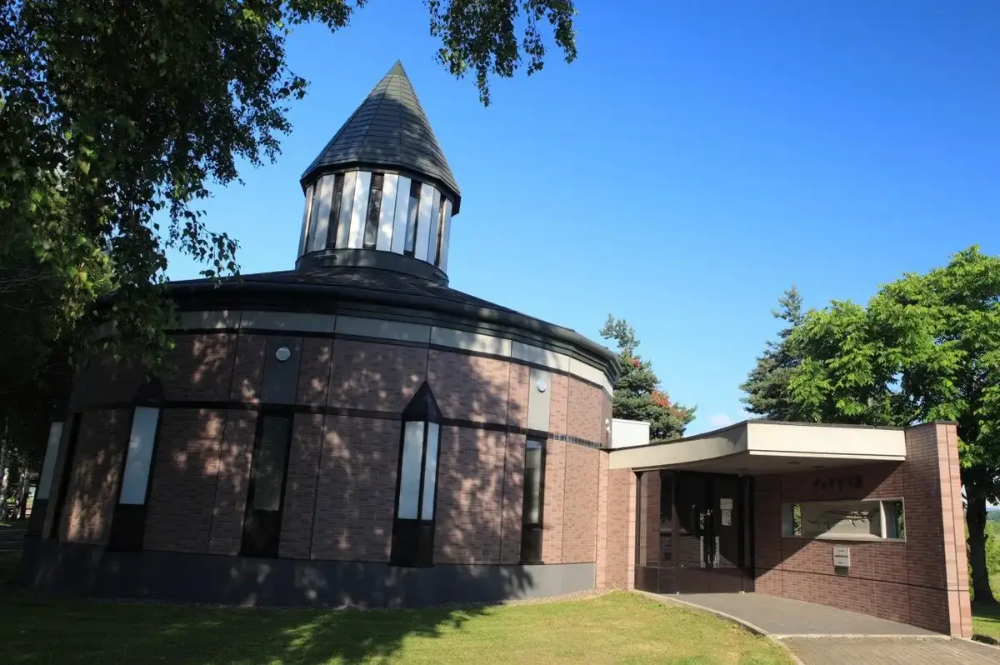
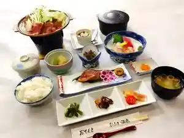
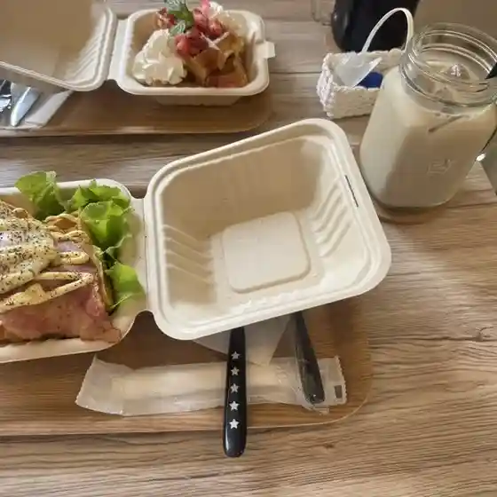
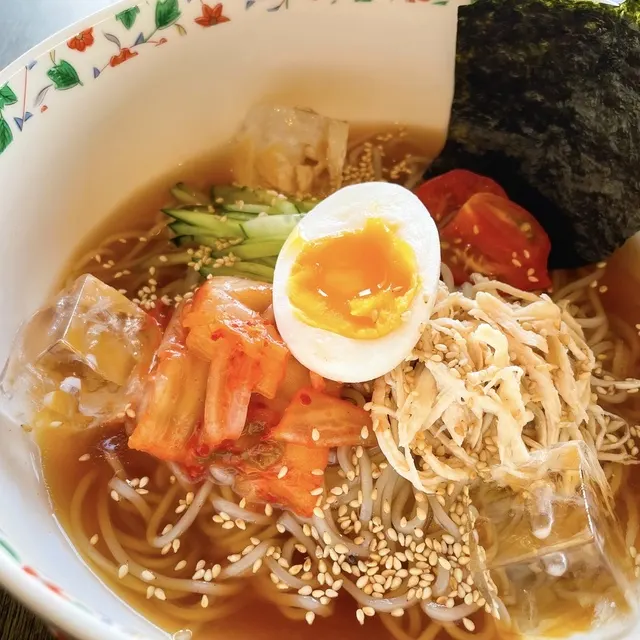
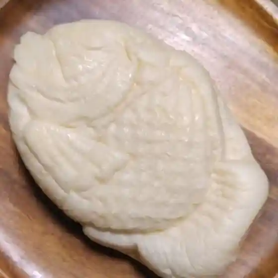
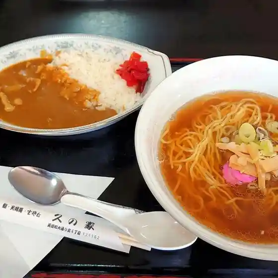
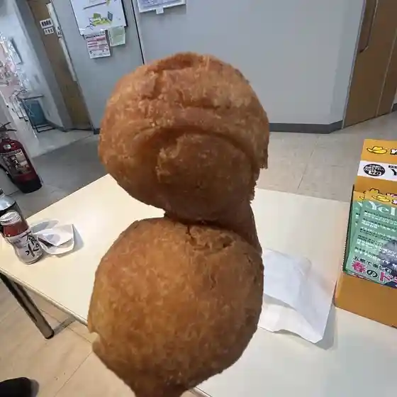
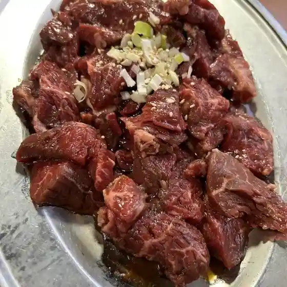
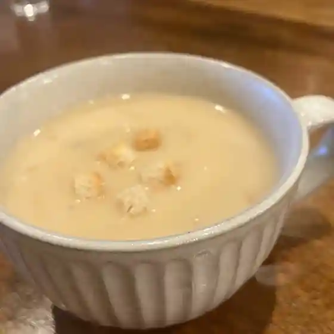

Bifuka
Bifuka · Hokkaido
Bifuka
Highlighted on the Hokkaido map.

Stay
びふか温泉

Bifuka Onsen
Dining
cafeくりいむ

Cafe Kuriimu
kusuda design and cafe

Kusuda Design And Cafe
レストハウス あうる

Resutohausu Auru
セイコーマート 美深店

Seikoomaato Bifuka Mise
久の家食堂

Kyuu No Ie Shokudou
道の駅 びふか

Michi No Eki Bifuka
やき肉あぶり処

Yaki Niku Aburi Tokoro
肉BAR南

Niku Bar Minami
レストラン ビーエスビー
Resutoran Biiesubii
ファームイントント
Faamuintonto
アートビレッジ恩根内
Aatobirejji On Neuchi
トロッコ王国食堂
Torokko Oukoku Shokudou
あさ乃食堂
Asa No Shokudou
ビブリオテーク
Biburioteeku
旭荘食堂日本酒倶楽部
Gyokusou Shokudou Nihonshu Kurabu
びふか温泉
Bifuka Onsen
南坂精肉店
Minami Saka Seinikuten
料理処おかざき
Ryouri Tokoro Okazaki
中田肉店
Nakada Niku Mise
びふか陽だまり
Bifuka You Damari
麺カフェ Itosugi
Men Kafe Itosugi
きた牛舎
Kita Gyuusha
ごはん屋 ノンノ
Gohan Ya Nonno
花月堂
Kagetsu Dou
Sights
Bifuka Chozame Hall
Bifuka Chozame Hall